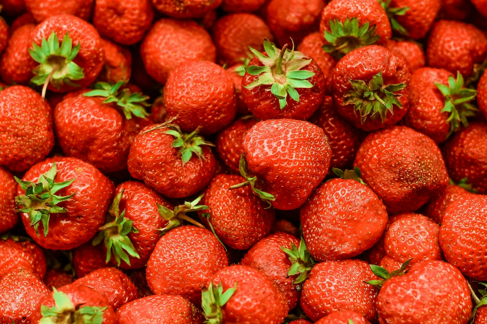

豐香
香氣明亮、滋味甜中帶酸，是常見的草莓品種之一。
香氣・酸甜平衡GET TO KNOW BERRIES
從品種風味到生長過程，認識這份紅通通的甜蜜，也學會把新鮮好好留住。

VARIETY NOTES
不同品種有不同香氣與口感。以下為示範介紹，實際栽種品種請以園方資訊為準。
香氣明亮、滋味甜中帶酸，是常見的草莓品種之一。
香氣・酸甜平衡果肉細緻柔軟，風味溫和，適合直接品嚐果實原味。
口感・柔軟細緻果實外觀飽滿，酸甜滋味鮮明，常用於鮮食與甜點。
風味・濃郁鮮明FROM BLOOM TO BERRY
一朵小花，慢慢長成一顆香甜的果實。
草莓植株開出白色小花，等待授粉。
花朵授粉後，花托逐漸膨大形成幼果。
果實逐漸成熟，顏色由青轉紅，風味也慢慢發展。
依成熟狀態適時採摘，享用當季的新鮮滋味。
BERRY GOOD TO KNOW
挑選時看色澤與果實狀態，買回家後妥善冷藏。
草莓含有維生素 C 與膳食纖維，作為均衡飲食的一部分，享受酸甜好滋味。
尚未食用前先不要清洗，挑除受損果實後冷藏，食用前再以清水輕柔洗淨。
選擇色澤自然、果實飽滿且表面無明顯碰傷的草莓，並留意果蒂是否新鮮。
MEET THE BERRY